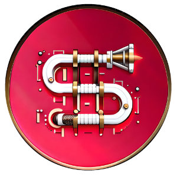

SanicKit#
{kind=link}
SanicKit adds file-path routing to Sanic, inspired by Svelte Kit. The handler and template code are both included in the same .sanic file, to help promote Locality of
Behvaiour.
Support for HTMX is built in. In particular, middleware is included to help handle HTMX requests and responses. Support for template fragments is also included (thanks to Jinja2 Fragments).
Installation#
To install SanicKit, create a new virtual environment and install sanickit with:
python -m venv .venv
. ./.venv/bin/activate
python -m pip install sanickit
This will install the sk command line tool. Create a new skeleton project with:
sk new
This will create the following source tree:
.
├── README.md
├── src
│ ├── +head.html
│ ├── blueprints
│ ├── index.html
│ ├── lib
│ ├── middleware
│ │ └── htmx.py
│ ├── routes
│ │ ├── +layout.html
│ │ ├── +page.sanic
│ └── server_setup.py
└── static
└── app.css
The files and folders serve the following purposes:
+head.html- Information contained in the<head>of pages returned by the server.blueprints- Any python files created here will be added as blueprints to the app.index.html- the base template for all pages.lib- any code included here can be imported into handlers by importing from.lib. E.g.from .lib.auth import my_auth_helpermiddleware- any code included here will be imported as middleware by the app.routes- All file paths in this folder will be recreated as URLs in the app. See routes for more info.+page.sanic- These files contain the handler code forGETrequests and the page template.+layout.html- a template that any routes in this folder or below will inherit from this template.
server_setup.py- Code for server life-cycle events.static- Files that will be served from the/static/route.static/app.css- Default CSS file.